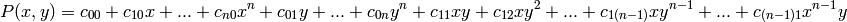

Bases: astropy.modeling.polynomial.PolynomialModel
2D Polynomial model.
Represents a general polynomial of degree n:

| Parameters: | degree : int
x_domain : list or None
y_domain : list or None
x_window : list or None
y_window : list or None
param_dim : int
**params : dict
|
|---|---|
| Other Parameters: | |
fixed : a dict
tied : dict
bounds : dict eqcons : list
ineqcons : list
|
|
Attributes Summary
| input_names | list() -> new empty list |
| n_inputs | int(x=0) -> int or long |
Methods Summary
| evaluate(x, y, *coeffs) | |
| fit_deriv(x, y, *params) | Computes the Vandermonde matrix. |
| invlex_coeff(coeffs) | |
| multivariate_horner(x, y, coeffs) | Multivariate Horner’s scheme |
| prepare_inputs(x, y, **kwargs) |
Attributes Documentation
Methods Documentation
Computes the Vandermonde matrix.
| Parameters: | x : ndarray
y : ndarray
params : throw away parameter
|
|---|---|
| Returns: | result : ndarray
|
Multivariate Horner’s scheme
| Parameters: | x, y : array coeff : array of coefficients in inverse lexical order |
|---|